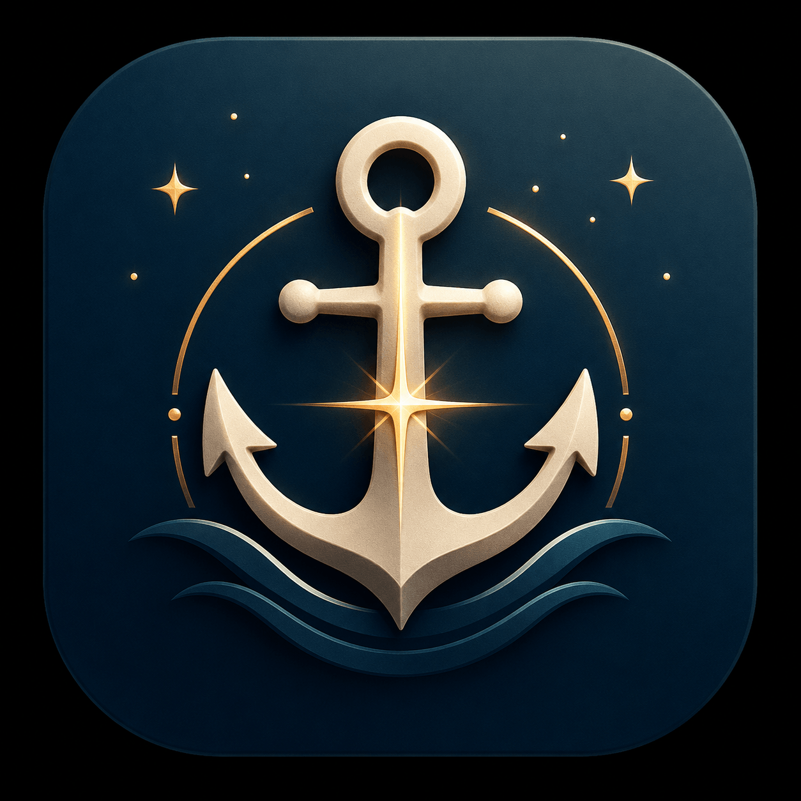

Elora Radiance Co. · Free
Scripture for Every Emotion
A word for every weight your heart carries. Pick what you're feeling — Scripture meets you there.
"Do not be anxious about anything, but in everything by prayer and supplication with thanksgiving let your requests be made known to God."
What's Inside
Not a generic devotional. Real human feelings — the heavy ones, the ones full of friction, and the ones we want to stay anchored in. Each emotion opens to multiple verses with a brief reflection that meets you where you actually are.
How It Works
Designed for the moments you actually need it — not after twenty taps and a sign-up flow. Open it. Pick a feeling. Read the verse. Carry it with you.
"I waited patiently for the Lord; he inclined to me and heard my cry. He drew me up from the pit of destruction, out of the miry bog, and set my feet upon a rock, making my steps secure."
Psalm 40:1–2 · ESV — This is what Anchored Verse is for.
Open It Now
Whatever you're feeling right now — anxiety, gratitude, grief, hope — there's a verse for that. Pick it. Read it. Anchor.
⚓ Open Anchored Verse — FreeQuestions
Elora Radiance Co.
Scripture-based tools for every dimension of the Christian life.